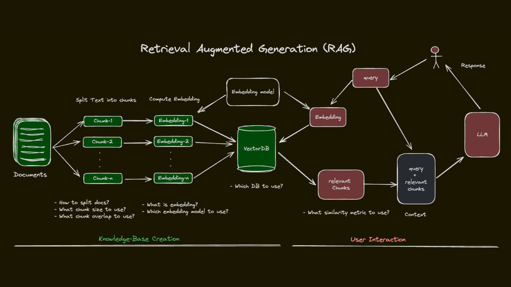

RAG (Retrieval-Augmented Generation) es una técnica que combina la generación de texto de los LLM con la recuperación de información de fuentes externas, como bases de datos vectoriales. Esta metodología permite superar las limitaciones de conocimiento estático de los LLM, proporcionando respuestas más precisas y actualizadas al aprovechar datos relevantes almacenados externamente.
En un sistema RAG, cuando un usuario realiza una consulta, el proceso se divide en tres etapas principales:
Recuperación: El sistema utiliza la consulta para buscar información relevante en una base de datos vectorial. Esta búsqueda se basa en la similitud semántica, lo que permite encontrar datos que no coinciden exactamente con las palabras de la consulta pero que son conceptualmente relacionados.
Integración: La información recuperada se integra con el conocimiento interno del LLM. Esto puede implicar la combinación de fragmentos de texto, datos estructurados o cualquier otro tipo de información que el modelo pueda procesar.
Generación: Una vez obtenida la información relevante, el sistema utiliza un modelo de lenguaje (LLM) para generar una respuesta coherente y contextualmente apropiada, integrando la información recuperada con el conocimiento interno del modelo.
Esta combinación de recuperación y generación permite a los sistemas RAG proporcionar respuestas más precisas, actualizadas y contextualmente relevantes, superando las limitaciones de los LLM tradicionales que dependen únicamente de su conocimiento preentrenado.

rag pipeline
Chunking
Cuando tenemos un documento extenso, es necesario dividirlo en fragmentos más pequeños (chunking) para que el modelo pueda procesarlos y recuperarlos de manera eficiente.
Elegir una buena estrategia de fragmentación de texto es clave para construir una solución RAG. Al fragmentar texto, tenemos varias estrategias entre las que elegir. Los objetivos generales de una estrategia de fragmentación son los siguientes:
Capturar con precisión el significado del texto dentro de nuestros embeddings.
Garantizar que se incluya suficiente información contextualmente relevante.
*Mantener la longitud de los tokens dentro del límite de solicitud del modelo de embedding
Estos objetivos pueden ser contradictorio, por lo que elegir una estrategia de fragmentación es un acto de equilibrio.
LangChain
LangChain es una biblioteca de Python que facilita la construcción de aplicaciones de lenguaje natural utilizando modelos de lenguaje. Proporciona herramientas para manejar la fragmentación de texto, la generación de embeddings y la integración con bases de datos vectoriales, lo que la convierte en una opción ideal para implementar un sistema RAG.
Estrategias de chunking
Tamaño fijo: El enfoque más básico. Divide el texto basándose en un conteo de caracteres. Generalmente no se recomienda, pero es bueno para entender el concepto.
Recursivo: El mejor fragmentador de texto general para empezar. Tiene en cuenta la estructura del texto dividiéndolo según separadores comunes (por ejemplo, párrafos, saltos de línea y espacios). Los fragmentos son de tamaño variable, pero tenemos una mayor probabilidad de capturar ideas más completas.
Basado en documentos: El mejor para tipos de documentos específicos. Un fragmentador que considera el tipo de documento (como Markdown, PDF o HTML). Es esencialmente igual al recursivo, pero utiliza caracteres de división personalizados según el tipo de documento que se esté fragmentando.
Semántico: Para un enfoque más personalizado. Intenta construir fragmentos utilizando embeddings de oraciones para identificar contenido relacionado semánticamente. Requiere un modelo de embedding. Generalmente es más lento y requiere más recursos de computación que las estrategias anteriores.
Agéntico: Más experimental que listo para producción. Utiliza un agente para construir fragmentos semánticos. Al momento de escribir esto, este método es lento y no escala bien, pero puedes experimentar con opciones para tus casos de uso (consulta la Parte V para más información sobre agentes).
Ejemplos de estrategias de chunking
Haz clic para ver el código
from langchain_text_splitters import CharacterTextSplittertext ="""Nuestro sistema requiere autenticación de múltiples factores (MFA). Esto ayuda a mantener su cuenta segura. Esta guía paso a paso lo guiará a través de la configuración de MFA."""splitter = CharacterTextSplitter( separator="", chunk_size=70, chunk_overlap=20, keep_separator='end')chunks = splitter.split_text(text)print("Fragmentos:\n")for idx, chunk inenumerate(chunks):print(f"{idx +1}: {chunk}\n- número de caracteres: {len(chunk)}")
Fragmentos:
1: Nuestro sistema requiere autenticación de múltiples factores (MFA). Es
- número de caracteres: 70
2: s factores (MFA). Esto ayuda a mantener su cuenta segura. Esta guía pa
- número de caracteres: 70
3: segura. Esta guía paso a paso lo guiará a través de la configuración d
- número de caracteres: 70
4: e la configuración de MFA.
- número de caracteres: 26
Haz clic para ver el código
from langchain_text_splitters import RecursiveCharacterTextSplittertext =""""Nuestro sistema requiere autenticación de múltiples factores (MFA). Esto ayuda a mantener su cuenta segura. Esta guía paso a paso lo guiará a través de la configuración de MFA."""splitter = RecursiveCharacterTextSplitter( separators=["\n\n", "\n", ".", " ", ""], chunk_size=70, chunk_overlap=0, keep_separator='end')chunks = splitter.split_text(text)print("Fragmentos:\n")for idx, chunk inenumerate(chunks):print(f"{idx +1}: {chunk}\n- número de caracteres: {len(chunk)}")
Fragmentos:
1: "Nuestro sistema requiere autenticación de múltiples factores (MFA).
- número de caracteres: 68
2: Esto ayuda a mantener su cuenta segura.
- número de caracteres: 39
3: Esta guía paso a paso lo guiará a través de la configuración de MFA.
- número de caracteres: 68
Ejemplo
En este ejemplo, implementaremos un sistema RAG utilizando el modelo jina/jina-embeddings-v2-base-es que está entrenado para generar embeddings en español y en inglés, y la base de datos vectorial Chroma para almacenar y recuperar información relevante. Este modelo admite una ventana de contexto de 8.192 tokens.
Vamos a crear un sistema RAG para la documentación de este repositorio. La siguiente función devuelve todas las páginas HTML que son enlaces internos a una URL dada. El parámetro max_depth controla la profundidad de la búsqueda (0 = solo la URL dada, -1 = profundidad infinita).
Haz clic para ver el código
import asynciofrom urllib.parse import urljoin, urlparse, urlunparsefrom playwright.async_api import async_playwrightasyncdef get_internal_links( url: str, max_depth: int=-1, extensions: list[str] = ["html", "htm"]) ->list[str]: parsed_initial = urlparse(url)if parsed_initial.path.endswith(tuple(f".{ext}"for ext in extensions)): base_dir = parsed_initial.path.rsplit('/', 1)[0] +'/'else: base_dir = parsed_initial.path if parsed_initial.path.endswith('/') else parsed_initial.path +'/'def normalize_url(target_url: str) ->str: parsed = urlparse(target_url) path = parsed.pathfor ext in extensions:if path.endswith(f"/index.{ext}"): path = path[:-len(f"index.{ext}")]breakifnot path.endswith('/') andnot path.endswith(tuple(f".{ext}"for ext in extensions)): path +='/'return urlunparse((parsed.scheme, parsed.netloc, path, '', '', '')) base_clean = normalize_url(url)# Usaremos un diccionario para guardar el estado: {url_normalizada: existe_bool}# Esto nos sirve para el resultado final y como registro de visitados discovered_urls = {} to_visit = [(base_clean, 0)]def is_valid_internal_structure(target_url: str) ->bool: parsed_target = urlparse(target_url)if parsed_target.netloc != parsed_initial.netloc:returnFalseifnot parsed_target.path.startswith(base_dir):returnFalse has_valid_ext = parsed_target.path.endswith(tuple(f".{ext}"for ext in extensions)) is_folder = parsed_target.path.endswith('/')ifnot (has_valid_ext or is_folder):returnFalsereturnTrueasyncwith async_playwright() as p: browser =await p.chromium.launch(headless=True) page =await browser.new_page()while to_visit: current_url, depth = to_visit.pop(0)if current_url in discovered_urls:continue# Si max_depth es 0, solo validamos la primera y paramosif max_depth ==0:try: response =await page.goto(current_url, wait_until="domcontentloaded")if response and response.status ==200: discovered_urls[current_url] =Trueexcept:passbreaktry:# Navegar a la URL response =await page.goto(current_url, wait_until="domcontentloaded")# SI LA PÁGINA DEVUELVE UN 404 (O CUALQUIER ERROR), LA MARCAMOS COMO FALSA Y PASAMOSifnot response or response.status !=200: discovered_urls[current_url] =Falsecontinue# Si es un 200 OK, es una página real y válida discovered_urls[current_url] =True# Control de profundidad máxima para seguir explorando hacia adentroif max_depth !=-1: parsed_current = urlparse(current_url) relative_path = parsed_current.path[len(base_dir):]if relative_path.endswith(tuple(f".{ext}"for ext in extensions)): relative_path = relative_path.rsplit('/', 1)[0] if'/'in relative_path else'' actual_depth =len([p for p in relative_path.split('/') if p])if actual_depth >= max_depth:continue# No extraemos más enlaces de esta página si ya alcanzamos el límite# Extraer enlaces de la página actual válida hrefs =await page.eval_on_selector_all("a", "elements => elements.map(e => e.href)")for href in hrefs:ifnot href:continue absolute_url = urljoin(current_url, href) clean_abs = normalize_url(absolute_url)if clean_abs notin discovered_urls and is_valid_internal_structure(clean_abs): to_visit.append((clean_abs, depth +1))exceptExceptionas e:# Si da un error de carga de red, asumimos que no es válida discovered_urls[current_url] =Falseawait browser.close()# Filtrar el diccionario para devolver SOLO las URLs confirmadas (True) y ordenarlas valid_links = [url for url, exists in discovered_urls.items() if exists]returnsorted(valid_links)
Ejemplo de uso:
Haz clic para ver el código
url ="https://surtich.github.io/IA-para-desarrolladores/qmd/index.html"internal_links =await get_internal_links(url, max_depth=1)print(f"Enlaces internos encontrados en {url}:\n")internal_links
Enlaces internos encontrados en https://surtich.github.io/IA-para-desarrolladores/qmd/index.html:
Ahora creamos una función que permita extraer el texto de cada página HTML dada una URL. Esta función también utiliza Playwright para cargar la página y extraer su contenido textual.
Haz clic para ver el código
import asynciofrom playwright.async_api import async_playwrightasyncdef extract_text_from_urls(urls: list[str]) ->dict[str, str]:""" Extrae el texto de una lista de URLs preservando la estructura de párrafos y saltos de línea, ideal para procesar con un RecursiveCharacterTextSplitter. """ results = {}asyncwith async_playwright() as p: browser =await p.chromium.launch(headless=True) page =await browser.new_page()for url in urls:try:await page.goto(url, wait_until="domcontentloaded")# Eliminamos la basura visual e informativa directamente en el DOM clean_text =await page.evaluate("""() => { const bodyClone = document.body.cloneNode(true); const selectorsToRemove = [ 'script', 'style', 'noscript', 'iframe', 'header', 'footer', 'nav', 'aside', '.menu', '.sidebar', '#sidebar', '#header', '#footer' ]; selectorsToRemove.forEach(selector => { bodyClone.querySelectorAll(selector).forEach(el => el.remove()); }); return bodyClone.innerText; }""")# --- PROCESAMIENTO MANTENIENDO SALTOS DE LÍNEA ---# 1. Dividimos por líneas para limpiar espacios fantasmas en los extremos lines = [line.strip() for line in clean_text.splitlines()]# 2. Agrupamos manteniendo la separación, pero evitando acumular # decenas de líneas vacías seguidas si el HTML tenía mucho espacio en blanco. cleaned_lines = []for line in lines:if line: # Si la línea tiene contenido, se añade tal cual cleaned_lines.append(line)elif cleaned_lines and cleaned_lines[-1] !="": # Si es una línea vacía, solo dejamos UNA para separar párrafos/secciones cleaned_lines.append("")# 3. Volvemos a unir el texto usando el salto de línea estándar final_text ="\n".join(cleaned_lines).strip() results[url] = final_textexceptExceptionas e:print(f"Error al extraer texto de {url}: {e}") results[url] =""await browser.close()return results
Ejemplo de uso:
Haz clic para ver el código
texts =await extract_text_from_urls(internal_links)for url, text in texts.items():print(f"Texto extraído de {url}:\n{text[:200]}...\n")
Texto extraído de https://surtich.github.io/IA-para-desarrolladores/qmd/:
Bienvenido al curso de IA para Desarrolladores
Este portal contiene todo el material necesario para dominar la implementación de modelos de lenguaje y herramientas de IA en el flujo de desarrollo.
🚀 ...
Texto extraído de https://surtich.github.io/IA-para-desarrolladores/qmd/10_fundamentos/10_intro.html:
Conceptos clave
Inteligencia Artificial (IA): Campo de la informática que busca crear sistemas capaces de realizar tareas que normalmente requieren inteligencia humana, como el razonamiento y la reso...
Texto extraído de https://surtich.github.io/IA-para-desarrolladores/qmd/10_fundamentos/20_linear_regression.html:
Introducción
En la lección anterior, vimos que podemos utilizar distintos modelos para ajustar una función a un conjunto de datos. Se justificó que el modelo más sencillo es el lineal, ya que tiene me...
Texto extraído de https://surtich.github.io/IA-para-desarrolladores/qmd/10_fundamentos/30_linear_regression2.html:
Introducción
En la lección anterior, vimos cómo la regresión lineal puede ser utilizada para modelar la relación entre una variable dependiente y una variable explicativa. Este es el tipo de regresión...
Texto extraído de https://surtich.github.io/IA-para-desarrolladores/qmd/10_fundamentos/40_logistic_regression.html:
Introducción
Supongamos que pretendemos explicar el sexo de una persona a partir de las notas obtenidas en un examen. En principio, puede parecer extraño este que queremos el sexo, ya que es algo que ...
Texto extraído de https://surtich.github.io/IA-para-desarrolladores/qmd/10_fundamentos/50_neural_networks.html:
Introducción
En la lección anterior, vimos cómo la regresión logística puede ser utilizada para resolver problemas de clasificación. Sin embargo, la regresión logística es un modelo lineal, lo que sig...
Texto extraído de https://surtich.github.io/IA-para-desarrolladores/qmd/20_LLM/00_introduction.html:
¿Qué es LLM?
En noviembre de 2022, OpenAI lanzó ChatGPT, un modelo de lenguaje grande (LLM) que se hizo viral casi de inmediato. Desde entonces, los LLM se han convertido en una de las tecnologías más...
Texto extraído de https://surtich.github.io/IA-para-desarrolladores/qmd/20_LLM/05_tokenization.html:
Introducción
Para que un modelo de lenguaje (LLM) procese información, primero debe transformar el lenguaje humano en una representación matemática. El proceso comienza con el corpus, un conjunto vast...
Texto extraído de https://surtich.github.io/IA-para-desarrolladores/qmd/20_LLM/10_word_embeddings.html:
Introducción
En la lección anterior se explicó que los modelos de lenguaje representan las palabras con números, y que esos vectores numéricos son los llamados embeddings. Estos vectores se aprenden d...
Texto extraído de https://surtich.github.io/IA-para-desarrolladores/qmd/20_LLM/20_word2vec.html:
Introducción
Word2Vec es un modelo de creación de embeddings propuesto por Tomas Mikolov y su equipo en Google en 2013. Word2Vec utiliza una red neuronal para aprender representaciones vectoriales de ...
Texto extraído de https://surtich.github.io/IA-para-desarrolladores/qmd/20_LLM/30_similarity.html:
Processing math: 100%
Introducción
En las lecciones anteriores, hemos aprendido que podemos representar palabras usando vectores. Esto nos permite conocer las palabras más cercanas a una dada, lo que...
Texto extraído de https://surtich.github.io/IA-para-desarrolladores/qmd/20_LLM/40_attention.html:
Processing math: 100%
Introducción
Lea las siguientes oraciones y preste atención a la palabra “estaba”:
Doblé la esquina porque estaba buscando la tienda.
Doblé la esquina porque la tienda estaba a...
Texto extraído de https://surtich.github.io/IA-para-desarrolladores/qmd/20_LLM/50_decoder.html:
Conceptos fundamentales
En la lección anterior vimos cómo el mecanismo de atención permite a los modelos de lenguaje capturar las relaciones entre palabras en una secuencia. Sin embargo, para construi...
Texto extraído de https://surtich.github.io/IA-para-desarrolladores/qmd/90_apendices/10_derivadas.html:
¿Qué es una derivada?
Supongamos que tenemos la siguiente ecuación lineal:
y=3+2⋅x
Queremos entender cómo cambia y con respecto a x. Es decir, queremos entender la tasa de cambio de y con respecto a...
Texto extraído de https://surtich.github.io/IA-para-desarrolladores/qmd/90_apendices/20_matrices.html:
¿Qué es un Vector?
En esencia, un vector es una lista ordenada de números. Desde el punto de vista geométrico, podemos imaginarlo como una flecha que nace en el origen (0,0) y termina en unas coordena...
Haz clic para ver el código
import chromadbfrom chromadb import Collectionfrom typing import Listfrom langchain_text_splitters import RecursiveCharacterTextSplitterfrom chromadb.utils.embedding_functions.ollama_embedding_function import ( OllamaEmbeddingFunction)class DocumentVectorStore:def__init__(self, corpus_data: dict[str, str], collection_name: str="paginas_web_ia", batch_size: int=20, model_name: str="jina/jina-embeddings-v2-base-es" ):""" Inicializa la base de datos vectorial usando Jina Embeddings v2 (Español). :param corpus_data: Diccionario con formato {url: texto_extraido} :param collection_name: Nombre de la colección en ChromaDB :param batch_size: Número de fragmentos procesados por lote al generar embeddings """# Configurar la función de embedding para usar Jina v2 en Ollama jina_embedding_function = OllamaEmbeddingFunction( url="http://localhost:11434", model_name=model_name )# Inicializar cliente de Chroma client = chromadb.Client()# --- PREVENCIÓN DE DUPLICADOS: BORRAR SI EXISTE ---try: client.get_collection(name=collection_name) client.delete_collection(name=collection_name)print(f"Colección antigua '{collection_name}' eliminada para evitar conflictos.\n")except (ValueError, Exception):pass# Crear la colección limpiaself.collection: Collection = client.create_collection( name=collection_name, embedding_function=jina_embedding_function, )# Configurar el splitter óptimo para mantener párrafos estructurados splitter = RecursiveCharacterTextSplitter( chunk_size=1500, chunk_overlap=200, separators=["\n\n", "\n", " ", ""] ) all_chunks = [] all_metadatas = [] all_ids = [] global_chunk_idx =1 total_documentos =len(corpus_data)# ==========================================# FASE 1: LOG DE PROCESAMIENTO DE TEXTO# ==========================================print("--- FASE 1: Procesando y troceando documentos ---")for idx, (url, document_text) inenumerate(corpus_data.items(), start=1):print(f"[{idx}/{total_documentos}] Procesando: {url}")ifnot document_text.strip():print(f" ⚠️ Documento vacío o con error de carga. Omitiendo...")continue chunks = splitter.split_text(document_text)print(f" ✨ Generados {len(chunks)} fragmentos.")for chunk in chunks: all_chunks.append(chunk) all_metadatas.append({"source": url}) all_ids.append(f"doc_{global_chunk_idx}") global_chunk_idx +=1print("\n--- FASE 2: Generando Embeddings e indexando en ChromaDB ---") total_chunks =len(all_chunks)if total_chunks ==0:print("❌ No se encontraron textos válidos para indexar.")return# ==========================================# FASE 2: LOG DE EMBEDDINGS (Por lotes configurables)# ==========================================for i inrange(0, total_chunks, batch_size):# Extraer el lote actual usando el parámetro batch_size batch_chunks = all_chunks[i:i + batch_size] batch_metadatas = all_metadatas[i:i + batch_size] batch_ids = all_ids[i:i + batch_size]# Calcular el límite superior para el mensaje de log hasta_chunk =min(i + batch_size, total_chunks)print(f"[{hasta_chunk}/{total_chunks}] Generando embeddings e insertando fragmentos...")# Añadir el lote a la colecciónself.collection.add( documents=batch_chunks, metadatas=batch_metadatas, ids=batch_ids )print(f"\n¡Hecho! Indexados con éxito los {total_chunks} fragmentos en la colección '{collection_name}'.")def query(self, question: str, n_results=3) -> List[dict]:""" Consulta la base de datos y devuelve los fragmentos junto con su URL de origen. """ results =self.collection.query( query_texts=[question], n_results=n_results ) formatted_results = [] documents = results.get('documents')[0] metadatas = results.get('metadatas')[0]for doc, meta inzip(documents, metadatas): formatted_results.append({"texto": doc,"fuente": meta["source"] })return formatted_results
Generamos los embeddings e indexamos los fragmentos en la base de datos vectorial:
--- FASE 1: Procesando y troceando documentos ---
[1/15] Procesando: https://surtich.github.io/IA-para-desarrolladores/qmd/
✨ Generados 1 fragmentos.
[2/15] Procesando: https://surtich.github.io/IA-para-desarrolladores/qmd/10_fundamentos/10_intro.html
✨ Generados 11 fragmentos.
[3/15] Procesando: https://surtich.github.io/IA-para-desarrolladores/qmd/10_fundamentos/20_linear_regression.html
✨ Generados 22 fragmentos.
[4/15] Procesando: https://surtich.github.io/IA-para-desarrolladores/qmd/10_fundamentos/30_linear_regression2.html
✨ Generados 11 fragmentos.
[5/15] Procesando: https://surtich.github.io/IA-para-desarrolladores/qmd/10_fundamentos/40_logistic_regression.html
✨ Generados 21 fragmentos.
[6/15] Procesando: https://surtich.github.io/IA-para-desarrolladores/qmd/10_fundamentos/50_neural_networks.html
✨ Generados 54 fragmentos.
[7/15] Procesando: https://surtich.github.io/IA-para-desarrolladores/qmd/20_LLM/00_introduction.html
✨ Generados 17 fragmentos.
[8/15] Procesando: https://surtich.github.io/IA-para-desarrolladores/qmd/20_LLM/05_tokenization.html
✨ Generados 16 fragmentos.
[9/15] Procesando: https://surtich.github.io/IA-para-desarrolladores/qmd/20_LLM/10_word_embeddings.html
✨ Generados 33 fragmentos.
[10/15] Procesando: https://surtich.github.io/IA-para-desarrolladores/qmd/20_LLM/20_word2vec.html
✨ Generados 23 fragmentos.
[11/15] Procesando: https://surtich.github.io/IA-para-desarrolladores/qmd/20_LLM/30_similarity.html
✨ Generados 14 fragmentos.
[12/15] Procesando: https://surtich.github.io/IA-para-desarrolladores/qmd/20_LLM/40_attention.html
✨ Generados 36 fragmentos.
[13/15] Procesando: https://surtich.github.io/IA-para-desarrolladores/qmd/20_LLM/50_decoder.html
✨ Generados 38 fragmentos.
[14/15] Procesando: https://surtich.github.io/IA-para-desarrolladores/qmd/90_apendices/10_derivadas.html
✨ Generados 6 fragmentos.
[15/15] Procesando: https://surtich.github.io/IA-para-desarrolladores/qmd/90_apendices/20_matrices.html
✨ Generados 9 fragmentos.
--- FASE 2: Generando Embeddings e indexando en ChromaDB ---
[20/312] Generando embeddings e insertando fragmentos...
[40/312] Generando embeddings e insertando fragmentos...
[60/312] Generando embeddings e insertando fragmentos...
[80/312] Generando embeddings e insertando fragmentos...
[100/312] Generando embeddings e insertando fragmentos...
[120/312] Generando embeddings e insertando fragmentos...
[140/312] Generando embeddings e insertando fragmentos...
[160/312] Generando embeddings e insertando fragmentos...
[180/312] Generando embeddings e insertando fragmentos...
[200/312] Generando embeddings e insertando fragmentos...
[220/312] Generando embeddings e insertando fragmentos...
[240/312] Generando embeddings e insertando fragmentos...
[260/312] Generando embeddings e insertando fragmentos...
[280/312] Generando embeddings e insertando fragmentos...
[300/312] Generando embeddings e insertando fragmentos...
[312/312] Generando embeddings e insertando fragmentos...
¡Hecho! Indexados con éxito los 312 fragmentos en la colección 'paginas_web_ia'.
Ahora podemos realizar consultas a la base de datos vectorial para recuperar fragmentos relevantes:
Haz clic para ver el código
question ="¿Qué es una regresión lineal?"results = vector_store.query(question, n_results=5)print(f"Resultados para la pregunta: '{question}'\n")for idx, result inenumerate(results, start=1):print(f"Resultado {idx}:\nTexto: {result['texto']}\nFuente: {result['fuente']}\n")
Resultados para la pregunta: '¿Qué es una regresión lineal?'
Resultado 1:
Texto: Introducción
En la lección anterior, vimos cómo la regresión lineal puede ser utilizada para modelar la relación entre una variable dependiente y una variable explicativa. Este es el tipo de regresión más sencillo y por eso se le denomina regresión lineal simple (SLR). En esta lección, vamos a ver algunos casos especiales de regresión lineal, como la regresión lineal sin variables explicativas, la regresión lineal con una sola variable de tipo categórico y la regresión lineal con múltiples variables explicativas.
Regresión lineal sin variables explicativas
Partiendo del dataset de notas de alumnos:
horas_estudio
notas
sexo
nombre
Leo
0
2
M
Sara
5
4
F
Javier
4
6
M
Elena
6
8
F
Marta
7
7
F
Fuente: https://surtich.github.io/IA-para-desarrolladores/qmd/10_fundamentos/30_linear_regression2.html
Resultado 2:
Texto: nombre
Leo
0
2
M
1
matemáticas
0
0
Sara
5
4
F
0
lengua
1
0
Javier
4
6
M
1
historia
0
1
Elena
6
8
F
0
matemáticas
0
0
Marta
7
7
F
0
lengua
1
0
La ecuación del modelo de regresión lineal sería:
y=b+m1⋅lengua_dummy+m2⋅historia_dummy
El modelo ajustado nos diría que b se corresponde con la media de las notas de matemáticas, m1 se corresponde con la diferencia entre la media de las notas de lengua y la media de las notas de matemáticas y m2 se corresponde con la diferencia entre la media de las notas de historia y la media de las notas de matemáticas.
Fuente: https://surtich.github.io/IA-para-desarrolladores/qmd/10_fundamentos/30_linear_regression2.html
Resultado 3:
Texto: [{'test_loss': 0.029826132580637932, 'test_acc': 0.9894999861717224}]
Notas
La regresión logística puede resolver también problemas de clasificación no separables linealmente, pero no podrá conseguir una exactidud del 100%.↩︎
Este gráfico se ha construido pidiéndole al modelo que prediga cientos de puntos a lo largo de todo el espacio de entrada y pintando cada punto con un color diferente dependiendo de la predicción del modelo.↩︎
Si no se fija la semilla, cada vez que se ejecute el código se obtendrán resultados diferentes debido a la aleatoriedad en la inicialización de los pesos y en el proceso de entrenamiento. Se ha elegido una semilla que alcanza la convergencia.↩︎
Fuente: https://surtich.github.io/IA-para-desarrolladores/qmd/10_fundamentos/50_neural_networks.html
Resultado 4:
Texto: Regresión lineal con una sola variable explicativa de tipo categórico
Supongamos que estamos interesados en conocer si hay diferencias en las notas de los alumnos en función de su sexo. Una forma de hacerlo es comparar la media de las notas para cada sexo. En este ejemplo la media de la nota de los hombres es 4.0 y media la nota de las mujeres 6.3. Es decir, que para este dataset las mujeres han obtenido mejores notas que los hombres. Concretamente, la diferencia entre las medias es de 2.3 puntos.
Podemos obtener esta misma información utilizando un modelo de regresión lineal. El problema es que la variable sexo no es numérica, sino que es de tipo categórico. Tenemos que convertirla a una variable numérica para poder utilizarla en un modelo de regresión lineal. Podríamos, por ejemplo, asignar el valor 0 a las mujeres y el valor 1 a los hombres:
horas_estudio
notas
sexo
sexo_num
nombre
Leo
0
2
M
1
Sara
5
4
F
0
Javier
4
6
M
1
Elena
6
8
F
0
Marta
7
7
F
0
Este tipo de variables se denominan variables dummy. Ahora sí podemos ajustar un modelo de regresión lineal utilizando la variable sexo_num como variable explicativa. Para ello usamos la fórmula que minimiza los parámetros b y m que vimos en el capítulo anterior:
b=y¯−mx¯m=∑i=1n(xi−x¯)(yi−y¯)∑i=1n(xi−x¯)2
Si resolvemos esta fórmula para nuestro dataset, obtenemos que el modelo de regresión lineal que mejor se ajusta a los datos es:
b: 6.33, m: -2.33
Fuente: https://surtich.github.io/IA-para-desarrolladores/qmd/10_fundamentos/30_linear_regression2.html
Resultado 5:
Texto: Introducción
En la lección anterior, vimos cómo la regresión logística puede ser utilizada para resolver problemas de clasificación. Sin embargo, la regresión logística es un modelo lineal, lo que significa que solo puede aprender relaciones lineales entre las características y la variable objetivo. Para abordar problemas más complejos, necesitamos modelos que puedan aprender relaciones no lineales. Aquí es donde entran en juego las redes neuronales.
Veamos un problema de clasificación aparentemente simple. Supongamos que tenemos el siguiente dataset que representa las puertas lógica AND, OR y XOR:
Haz clic para ver el código
import pandas as pd
X = [(0,0), (0,1), (1,0), (1,1)]
df = pd.DataFrame(X, columns=["x1", "x2"])
df["OR"] = df["x1"] | df["x2"]
df["AND"] = df["x1"] & df["x2"]
df["XOR"] = df["x1"] ^ df["x2"]
df.style.hide(axis='index')
x1
x2
OR
AND
XOR
0
0
0
0
0
0
1
1
0
1
1
0
1
0
1
1
1
1
1
0
Podemos tratar cada una de las columnas AND, OR y XOR como una variable objetivo para un problema de clasificación.
Si representamos gráficamente los puntos para cada función, podemos ver que las funciones AND y OR son linealmente separables, mientras que la función XOR no lo es:
Haz clic para ver el código
from plotnine import *
df_melt = df.melt(id_vars=["x1", "x2"], value_vars=["AND", "OR", "XOR"],
var_name="func", value_name="y")
Fuente: https://surtich.github.io/IA-para-desarrolladores/qmd/10_fundamentos/50_neural_networks.html
Ahora podemos integrar esta funcionalidad de recuperación con un modelo de lenguaje para generar respuestas más completas y contextualmente relevantes, utilizando la información recuperada como parte del contexto para la generación de texto. Usamos un template de Jinja2 para construir el prompt que se le enviará al modelo de lenguaje, incluyendo la pregunta del usuario y los fragmentos recuperados de la base de datos vectorial. Esto permite al modelo generar una respuesta que esté informada por la información relevante almacenada en la base de datos.
Haz clic para ver el código
from jinja2 import Templatefrom ollama import chatimport osfrom dotenv import load_dotenvload_dotenv(override=True)model = os.getenv('OLLAMA_MODEL')def generate_answer(question: str, retrieved_chunks: list[dict]) ->str: template_str ="""Eres un experto en inteligencia artificial y aprendizaje automático. Responde a la siguiente pregunta utilizando la información proporcionada en los fragmentos recuperados. Si la información no es suficiente, responde con lo que sabes sobre el tema.Pregunta: {{ question }}Fragmentos recuperados:{% for chunk in retrieved_chunks %}- {{ chunk.texto }} (Fuente: {{ chunk.fuente }}){% endfor %}""" template = Template(template_str) prompt = template.render(question=question, retrieved_chunks=retrieved_chunks) response = chat(model=model, messages=[{"role": "user", "content": prompt}])return response.message.content# Ejemplo de usoquestion ="¿En redes neuronales, qué es la función de activación?"retrieved_chunks = vector_store.query(question, n_results=5)answer = generate_answer(question, retrieved_chunks)print(f"Pregunta: {question}\n")print(f"Respuesta generada:\n{answer}")
Pregunta: ¿En redes neuronales, qué es la función de activación?
Respuesta generada:
En redes neuronales, la función de activación es un componente clave que permite a las neuronas aprender relaciones no lineales entre las características y el variable objetivo. La función de activación se aplica después de cada capa oculta y anteriormente a la capa de salida.
La función de activación más común en redes neuronales es el sigmoide, que es una función no lineal seguida de una función de activación no lineal. El sigmoide es especialmente útil para problemas de regresión y clasificación.
En el contexto del modelo que se describe, la función de activación utilizada es el sigmoide. Esta función introduce no linealidad en el modelo, lo que permite a las neuronas aprender relaciones complejas entre las características y el variable objetivo.
La función de activación sigmoide tiene dos formas principales: la funcionalidad tradicional del sigmoide (f(z) = z) y la función de activación L1 o Leaky ReLU (ReLU). Cada una de estas funciones ofrece diferentes propiedades y ventajas en términos de aprendizaje y generalización.
La funcionalidad tradicional del sigmoide es muy simple: se suma el valor del input a sí mismo. Por otro lado, la función de activación L1 o ReLU introduce una función no lineal que puede hacer que las neuronas aprendan relaciones más complejas entre las características y el variable objetivo.
La Leaky ReLU es una forma especializada de la función de activación L1, que se utiliza cuando el sesgo del modelo es negativo. La funcionalidad de la Leaky ReLU permite que las neuronas aprendan a superar los patrones de sesgo iniciales en el modelo.
En general, la función de activación sigmoide es muy útil para problemas de regresión y clasificación, ya que introduce no linealidad en el modelo y permite que las neuronas aprendan relaciones complejas entre las características y el variable objetivo. Sin embargo, también puede tener algunas limitaciones, como la saturación del gradiente y la dificultad para aprender patrones de sesgo iniciales.
En resumen, la función de activación sigmoide es una herramienta fundamental en redes neuronales que permite a las neuronas aprender relaciones no lineales entre las características y el variable objetivo. Su elegancia se debe a su capacidad para introducir no linealidad en el modelo y permitir que las neuronas aprendan patrones complejos, lo que la hace muy útil para problemas de regresión y clasificación.